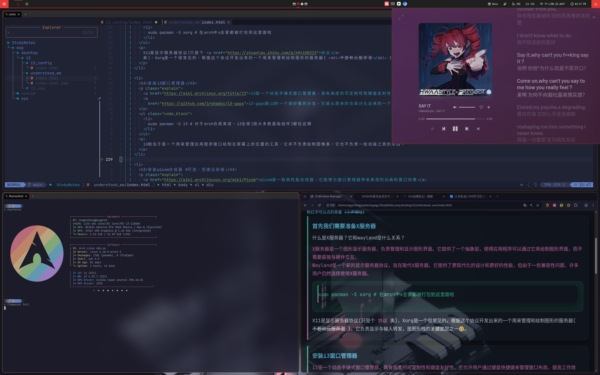

配置文件
这是当前demo图片中所使用的配置文件奥,
先展示一下成品UwU
-
polybar
polybar配置放在这里啦 -
i3/config window manager
点击标题折叠/展开，右侧按钮可复制完整配置。
i3 配置内容
# This file has been auto-generated by i3-config-wizard(1). # It will not be overwritten, so edit it as you like. # # Should you change your keyboard layout some time, delete # this file and re-run i3-config-wizard(1). # # i3 config file (v4) # # Please see https://i3wm.org/docs/userguide.html for a complete reference! # 配置指南: 主键使用 Super/Win 键 (Mod4); 想用 Alt 就改成 Mod1 # 依赖: i3-wm (或 i3-gaps) set $mod Mod4 # Font for window titles. Will also be used by the bar unless a different font # is used in the bar {} block below. # 配置指南: 标题栏与 bar 的字体; "monospace" 由系统字体提供 # 依赖: pango, ttf-dejavu (或其他等宽字体包) font pango:monospace 16 # codex: remove titlebars and set 1px borders # 配置指南: 全局边框粗细; pixel 1 更轻量 default_border pixel 1 default_floating_border pixel 1 # Thinner focus indicator: enforce 1px borders for all windows # 配置指南: 强制所有窗口 1px 边框，保持一致性 for_window [class="^.*"] border pixel 1 # Gaps (requires i3-gaps) # 配置指南: 设置窗口间距/外边距; smart_* 会在单窗口时自动收紧 # 依赖: i3-wm (含 gaps) 或 i3-gaps gaps inner 8 gaps outer 4 smart_gaps on smart_borders on # codex: border colors (orange) # 配置指南: 主题色与边框色，改这里即可统一配色 set $orange #ff9f1a set $orange_dark #b35a00 client.focused $orange $orange $orange client.focused_inactive $orange_dark $orange_dark $orange_dark client.unfocused $orange_dark $orange_dark $orange_dark client.urgent $orange $orange $orange client.placeholder $orange_dark $orange_dark $orange_dark client.background $orange # This font is widely installed, provides lots of unicode glyphs, right-to-left # text rendering and scalability on retina/hidpi displays (thanks to pango). #font pango:DejaVu Sans Mono 8 # Start XDG autostart .desktop files using dex. See also # https://wiki.archlinux.org/index.php/XDG_Autostart # 配置指南: XDG autostart 支持; 不用可注释掉 # 依赖: dex exec --no-startup-id dex --autostart --environment i3 # The combination of xss-lock, nm-applet and pactl is a popular choice, so # they are included here as an example. Modify as you see fit. # xss-lock grabs a logind suspend inhibit lock and will use i3lock to lock the # screen before suspend. Use loginctl lock-session to lock your screen. # 配置指南: 休眠前自动锁屏; 改成其他锁屏软件也行 # 依赖: xss-lock, i3lock exec --no-startup-id xss-lock --transfer-sleep-lock -- i3lock --nofork # NetworkManager is the most popular way to manage wireless networks on Linux, # and nm-applet is a desktop environment-independent system tray GUI for it. # 配置指南: NetworkManager 托盘; 不用托盘可注释 # 依赖: network-manager-applet exec --no-startup-id nm-applet # 设置feh使用/home/orgarchorg/Pictures/walls-catppuccin-mocha/3d-model.jpg 这里修改壁纸🤓 # 配置指南: feh 设置壁纸; 换成自己的路径即可 # 依赖: feh exec "feh --bg-scale /home/orgarchorg/Pictures/walls-catppuccin-mocha/3d-model.jpg" # 配置指南: 设置 DPI 缩放; 根据显示器改数值 # 依赖: xorg-xrandr exec "xrandr --dpi 144" # 配置指南: 启动 polybar; 路径按实际调整 # 依赖: polybar exec "bash ~/.config/polybar/launch.sh --docky" # 配置指南: 启动输入法 # 依赖: fcitx5 exec "fcitx5&" # open picom # 配置指南: 启动合成器; 需要的话再开 # 依赖: picom exec --no-startup-id picom -b --config ~/.config/picom/picom.conf # switch num lock at starting i3 # 配置指南: 启动时关闭小键盘; 想要常开就改成 on # 依赖: numlockx exec "numlockx off" # 配置指南: 自动平铺方向; 适合 vim 风格操作 # 依赖: autotiling exec_always "autotiling" # Use pactl to adjust volume in PulseAudio. 这里用pipewire会更好奥，pipewire完全兼容以下配置 # 配置指南: 刷新 i3status (若不用 i3status 可删除) # 依赖: i3status set $refresh_i3status killall -SIGUSR1 i3status # 配置指南: 音量热键; pipewire-pulse 与 pulseaudio 都支持 pactl # 依赖: pipewire-pulse (或 pulseaudio) bindsym XF86AudioRaiseVolume exec --no-startup-id pactl set-sink-volume @DEFAULT_SINK@ +10% && $refresh_i3status bindsym XF86AudioLowerVolume exec --no-startup-id pactl set-sink-volume @DEFAULT_SINK@ -10% && $refresh_i3status bindsym XF86AudioMute exec --no-startup-id pactl set-sink-mute @DEFAULT_SINK@ toggle && $refresh_i3status bindsym XF86AudioMicMute exec --no-startup-id pactl set-source-mute @DEFAULT_SOURCE@ toggle && $refresh_i3status # 调整亮度 # 配置指南: 亮度热键; 需要权限和 backlight 支持 # 依赖: brightnessctl bindsym XF86MonBrightnessUp exec --no-startup-id brightnessctl set +5% bindsym XF86MonBrightnessDown exec --no-startup-id brightnessctl set 5%- # Use Mouse+$mod to drag floating windows to their wanted position # 配置指南: 浮动窗口拖拽快捷键 floating_modifier $mod # move tiling windows via drag & drop by left-clicking into the title bar, # or left-clicking anywhere into the window while holding the floating modifier. # 配置指南: 鼠标拖拽平铺窗口; 不习惯可关闭 tiling_drag modifier titlebar # start a terminal # 配置指南: 默认终端 # 依赖: wezterm bindsym $mod+Return exec wezterm # kill focused window bindsym $mod+q kill # start dmenu (a program launcher) # bindsym $mod+d exec --no-startup-id wofi # 配置指南: 应用启动器; 这里用 Alt+Space 呼出 rofi # 依赖: rofi bindsym mod1+space exec "rofi -show drun" # A more modern dmenu replacement is rofi: # bindcode $mod+d exec "rofi -modi drun,run -show drun" # There also is i3-dmenu-desktop which only displays applications shipping a # .desktop file. It is a wrapper around dmenu, so you need that installed. # bindcode $mod+40 exec --no-startup-id i3-dmenu-desktop #warpd # 配置指南: 键盘鼠标工具 # 依赖: warpd bindsym $mod+mod1+x exec "warpd --hint" # change focus bindsym $mod+h focus left bindsym $mod+j focus down bindsym $mod+k focus up bindsym $mod+l focus right # alternatively, you can use the cursor keys: bindsym $mod+Left focus left bindsym $mod+Down focus down bindsym $mod+Up focus up bindsym $mod+Right focus right # move focused window bindsym $mod+Shift+h move left bindsym $mod+Shift+j move down bindsym $mod+Shift+k move up bindsym $mod+Shift+l move right # alternatively, you can use the cursor keys: bindsym $mod+Shift+Left move left bindsym $mod+Shift+Down move down bindsym $mod+Shift+Up move up bindsym $mod+Shift+Right move right # split in horizontal orientation bindsym $mod+alt+h split h # split in vertical orientation bindsym $mod+alt+v split v # enter fullscreen mode for the focused container bindsym $mod+f fullscreen toggle # change container layout (stacked, tabbed, toggle split) bindsym $mod+s layout stacking bindsym $mod+w layout tabbed bindsym $mod+e layout toggle split # toggle tiling / floating bindsym $mod+Shift+space floating toggle # codex: move floating windows with keys bindsym $mod+Shift+Ctrl+h move left 20 px bindsym $mod+Shift+Ctrl+j move down 20 px bindsym $mod+Shift+Ctrl+k move up 20 px bindsym $mod+Shift+Ctrl+l move right 20 px # change focus between tiling / floating windows bindsym $mod+space focus mode_toggle # codex: focus a floating window bindsym $mod+Shift+f [floating] focus # focus the parent container bindsym $mod+a focus parent # focus the child container #bindsym $mod+d focus child # Define names for default workspaces for which we configure key bindings later on. # We use variables to avoid repeating the names in multiple places. set $ws1 "1" set $ws2 "2" set $ws3 "3" set $ws4 "4" set $ws5 "5" set $ws6 "6" set $ws7 "7" set $ws8 "8" set $ws9 "9" set $ws10 "10" # switch to workspace bindsym $mod+1 workspace number $ws1 bindsym $mod+2 workspace number $ws2 bindsym $mod+3 workspace number $ws3 bindsym $mod+4 workspace number $ws4 bindsym $mod+5 workspace number $ws5 bindsym $mod+6 workspace number $ws6 bindsym $mod+7 workspace number $ws7 bindsym $mod+8 workspace number $ws8 bindsym $mod+9 workspace number $ws9 bindsym $mod+0 workspace number $ws10 # move focused container to workspace bindsym $mod+Shift+1 move container to workspace number $ws1 bindsym $mod+Shift+2 move container to workspace number $ws2 bindsym $mod+Shift+3 move container to workspace number $ws3 bindsym $mod+Shift+4 move container to workspace number $ws4 bindsym $mod+Shift+5 move container to workspace number $ws5 bindsym $mod+Shift+6 move container to workspace number $ws6 bindsym $mod+Shift+7 move container to workspace number $ws7 bindsym $mod+Shift+8 move container to workspace number $ws8 bindsym $mod+Shift+9 move container to workspace number $ws9 bindsym $mod+Shift+0 move container to workspace number $ws10 # reload the configuration file bindsym $mod+Shift+c reload # restart i3 inplace (preserves your layout/session, can be used to upgrade i3) bindsym $mod+Shift+r restart # exit i3 (logs you out of your X session) bindsym $mod+Shift+e exec "i3-nagbar -t warning -m 'You pressed the exit shortcut. Do you really want to exit i3? This will end your X session.' -B 'Yes, exit i3' 'i3-msg exit'" # resize window (you can also use the mouse for that) mode "resize" { # These bindings trigger as soon as you enter the resize mode # Pressing left will shrink the window’s width. # Pressing right will grow the window’s width. # Pressing up will shrink the window’s height. # Pressing down will grow the window’s height. bindsym j resize shrink width 10 px or 10 ppt bindsym k resize grow height 10 px or 10 ppt bindsym l resize shrink height 10 px or 10 ppt bindsym semicolon resize grow width 10 px or 10 ppt # same bindings, but for the arrow keys bindsym Left resize shrink width 10 px or 10 ppt bindsym Down resize grow height 10 px or 10 ppt bindsym Up resize shrink height 10 px or 10 ppt bindsym Right resize grow width 10 px or 10 ppt # back to normal: Enter or Escape or $mod+r bindsym Return mode "default" bindsym Escape mode "default" bindsym $mod+r mode "default" } bindsym $mod+r mode "resize" # codex: extra resize shortcuts (no resize mode) bindsym $mod+Ctrl+h resize shrink width 10 px or 10 ppt bindsym $mod+Ctrl+j resize grow height 10 px or 10 ppt bindsym $mod+Ctrl+k resize shrink height 10 px or 10 ppt bindsym $mod+Ctrl+l resize grow width 10 px or 10 ppt # Start i3bar to display a workspace bar (plus the system information i3status # finds out, if available) # bar { # status_command i3status # }依赖一键安装（如个别包在你的源里不存在，可能需要启用对应仓库或改用 AUR 版本）。
pacman -S --needed i3-wm i3status i3lock xss-lock dex network-manager-applet feh xorg-xrandr polybar fcitx5 picom numlockx autotiling pipewire-pulse brightnessctl wezterm rofi warpd pango ttf-dejavu -
picom/picom.conf compositor
点击标题折叠/展开，右侧按钮可复制完整配置。
picom 配置内容
################################# # Animations # # !These animations WILL NOT work correctly for any other wm other than phyOS-dwm fork! # fly-in: Windows fly in from random directions to the screen # maximize: Windows pop from center of the screen to their respective positions # minimize: Windows minimize from their position to the center of the screen # slide-in-center: Windows move from upper-center of the screen to their respective positions # slide-out-center: Windows move to the upper-center of the screen # slide-left: Windows are created from the right-most window position and slide leftwards # slide right: Windows are created from the left-most window position and slide rightwards # slide-down: Windows are moved from the top of the screen and slide downward # slide-up: Windows are moved from their position to top of the screen # squeeze: Windows are either closed or created to/from their center y-position (the animation is similar to a blinking eye) # squeeze-bottom: Similar to squeeze, but the animation starts from bottom-most y-position # zoom: Windows are either created or destroyed from/to their center (not the screen center) ################################# #enable or disable animations animations = true; #change animation speed of windows in current tag e.g open window in current tag animation-stiffness-in-tag = 125; #change animation speed of windows when tag changes animation-stiffness-tag-change = 90.0; animation-window-mass = 0.4; animation-dampening = 15; animation-clamping = true; #open windows animation-for-open-window = "zoom"; #minimize or close windows animation-for-unmap-window = "squeeze"; #popup windows animation-for-transient-window = "slide-up"; #available options: slide-up, slide-down, slide-left, slide-right, squeeze, squeeze-bottom, zoom #set animation for windows being transitioned out while changings tags animation-for-prev-tag = "minimize"; #enables fading for windows being transitioned out while changings tags enable-fading-prev-tag = true; #set animation for windows being transitioned in while changings tags animation-for-next-tag = "slide-in-center"; #enables fading for windows being transitioned in while changings tags enable-fading-next-tag = true; ################################# # Shadows # ################################# # Enabled client-side shadows on windows. Note desktop windows # (windows with '_NET_WM_WINDOW_TYPE_DESKTOP') never get shadow, # unless explicitly requested using the wintypes option. # # shadow = false shadow = false; # The blur radius for shadows, in pixels. (defaults to 12) # shadow-radius = 12 shadow-radius = 12; # The opacity of shadows. (0.0 - 1.0, defaults to 0.75) # shadow-opacity = .75 # The left offset for shadows, in pixels. (defaults to -15) # shadow-offset-x = -15 shadow-offset-x = -20; # The top offset for shadows, in pixels. (defaults to -15) # shadow-offset-y = -15 shadow-offset-y = -20; # Red color value of shadow (0.0 - 1.0, defaults to 0). # shadow-red = 0 # Green color value of shadow (0.0 - 1.0, defaults to 0). # shadow-green = 0 # Blue color value of shadow (0.0 - 1.0, defaults to 0). # shadow-blue = 0 # Hex string color value of shadow (#000000 - #FFFFFF, defaults to #000000). This option will override options set shadow-(red/green/blue) # shadow-color = "#000000" # Specify a list of conditions of windows that should have no shadow. # # examples: # shadow-exclude = "n:e:Notification"; # # shadow-exclude = [] shadow-exclude = [ "name = 'Notification'", "class_g = 'Conky'", "class_g ?= 'Notify-osd'", "class_g = 'Cairo-clock'", "class_g = 'dwm'", "class_g = 'chromium'", "class_g *?= 'slop'", "_GTK_FRAME_EXTENTS@:c" ]; # Specify a list of conditions of windows that should have no shadow painted over, such as a dock window. # clip-shadow-above = [] # Specify a X geometry that describes the region in which shadow should not # be painted in, such as a dock window region. Use # shadow-exclude-reg = "x10+0+0" # for example, if the 10 pixels on the bottom of the screen should not have shadows painted on. # # shadow-exclude-reg = "" # Crop shadow of a window fully on a particular Xinerama screen to the screen. # xinerama-shadow-crop = false ################################# # Fading # ################################# # Fade windows in/out when opening/closing and when opacity changes, # unless no-fading-openclose is used. fading = true; # Opacity change between steps while fading in. (0.01 - 1.0, defaults to 0.028) # fade-in-step = 0.028 fade-in-step = 0.023; # Opacity change between steps while fading out. (0.01 - 1.0, defaults to 0.03) # fade-out-step = 0.03 fade-out-step = 0.035; # The time between steps in fade step, in milliseconds. (> 0, defaults to 10) fade-delta = 5 # Specify a list of conditions of windows that should not be faded. # fade-exclude = [] # Do not fade on window open/close. # no-fading-openclose = false # Do not fade destroyed ARGB windows with WM frame. Workaround of bugs in Openbox, Fluxbox, etc. # no-fading-destroyed-argb = false ################################# # Transparency / Opacity # ################################# # Opacity of inactive windows. (0.1 - 1.0, defaults to 1.0) inactive-opacity = 0.75 # Opacity of window titlebars and borders. (0.1 - 1.0, disabled by default) # frame-opacity = 1.0 # Let inactive opacity set by -i override the '_NET_WM_WINDOW_OPACITY' values of windows. # inactive-opacity-override = true # inactive-opacity-override = true; # Default opacity for active windows. (0.0 - 1.0, defaults to 1.0) active-opacity = 0.75 # Dim inactive windows. (0.0 - 1.0, defaults to 0.0) # inactive-dim = 0.0 # Specify a list of conditions of windows that should never be considered focused. # focus-exclude = [] focus-exclude = [ "class_g = 'Cairo-clock'" , ]; # Use fixed inactive dim value, instead of adjusting according to window opacity. # inactive-dim-fixed = 1.0 ################################# # Corners # ################################# # Sets the radius of rounded window corners. When > 0, the compositor will # round the corners of windows. Does not interact well with # `transparent-clipping`. corner-radius = 11; # Exclude conditions for rounded corners. rounded-corners-exclude = [ "window_type = 'dock'", "window_type = 'desktop'" ]; blur: { method = "dual_kawase"; strength = 9; background = true; background-frame = false; background-fixed = false; } # Exclude conditions for background blur. # blur-background-exclude = [] blur-background-exclude = [ "window_type = 'dock'", "window_type = 'desktop'", "_GTK_FRAME_EXTENTS@:c", "class_g = 'Chromium'", "class_g = 'Discord'", "class_g = 'Dunst'", "class_g = 'Peek'", "class_g *?= 'slop'", ]; ################################# # General Settings # ################################# # Daemonize process. Fork to background after initialization. Causes issues with certain (badly-written) drivers. # daemon = false # Specify the backend to use: `xrender`, `glx`, or `xr_glx_hybrid`. # `xrender` is the default one. # backend = "glx"; # Enable/disable VSync. vsync = true; # Enable remote control via D-Bus. See the *D-BUS API* section below for more details. # dbus = false # Try to detect WM windows (a non-override-redirect window with no # child that has 'WM_STATE') and mark them as active. # # mark-wmwin-focused = false mark-wmwin-focused = true; # Mark override-redirect windows that doesn't have a child window with 'WM_STATE' focused. # mark-ovredir-focused = false mark-ovredir-focused = true; # Try to detect windows with rounded corners and don't consider them # shaped windows. The accuracy is not very high, unfortunately. # # detect-rounded-corners = false detect-rounded-corners = false; # Detect '_NET_WM_WINDOW_OPACITY' on client windows, useful for window managers # not passing '_NET_WM_WINDOW_OPACITY' of client windows to frame windows. # # detect-client-opacity = false detect-client-opacity = false; # Use EWMH '_NET_ACTIVE_WINDOW' to determine currently focused window, # rather than listening to 'FocusIn'/'FocusOut' event. Might have more accuracy, # provided that the WM supports it. # use-ewmh-active-win = true; # Unredirect all windows if a full-screen opaque window is detected, # to maximize performance for full-screen windows. Known to cause flickering # when redirecting/unredirecting windows. # unredir-if-possible = false; # Delay before unredirecting the window, in milliseconds. Defaults to 0. # unredir-if-possible-delay = 0 # Conditions of windows that shouldn't be considered full-screen for unredirecting screen. # unredir-if-possible-exclude = [] # Use 'WM_TRANSIENT_FOR' to group windows, and consider windows # in the same group focused at the same time. # # detect-transient = false detect-transient = true; # Use 'WM_CLIENT_LEADER' to group windows, and consider windows in the same # group focused at the same time. This usually means windows from the same application # will be considered focused or unfocused at the same time. # 'WM_TRANSIENT_FOR' has higher priority if detect-transient is enabled, too. # # detect-client-leader = false # Resize damaged region by a specific number of pixels. # A positive value enlarges it while a negative one shrinks it. # If the value is positive, those additional pixels will not be actually painted # to screen, only used in blur calculation, and such. (Due to technical limitations, # with use-damage, those pixels will still be incorrectly painted to screen.) # Primarily used to fix the line corruption issues of blur, # in which case you should use the blur radius value here # (e.g. with a 3x3 kernel, you should use `--resize-damage 1`, # with a 5x5 one you use `--resize-damage 2`, and so on). # May or may not work with *--glx-no-stencil*. Shrinking doesn't function correctly. # # resize-damage = 1 # Specify a list of conditions of windows that should be painted with inverted color. # Resource-hogging, and is not well tested. # # invert-color-include = [] # GLX backend: Avoid using stencil buffer, useful if you don't have a stencil buffer. # Might cause incorrect opacity when rendering transparent content (but never # practically happened) and may not work with blur-background. # My tests show a 15% performance boost. Recommended. # # glx-no-stencil = true; # GLX backend: Avoid rebinding pixmap on window damage. # Probably could improve performance on rapid window content changes, # but is known to break things on some drivers (LLVMpipe, xf86-video-intel, etc.). # Recommended if it works. # # glx-no-rebind-pixmap = false # Disable the use of damage information. # This cause the whole screen to be redrawn everytime, instead of the part of the screen # has actually changed. Potentially degrades the performance, but might fix some artifacts. # The opposing option is use-damage # # no-use-damage = false use-damage = true; # Use X Sync fence to sync clients' draw calls, to make sure all draw # calls are finished before picom starts drawing. Needed on nvidia-drivers # with GLX backend for some users. # xrender-sync-fence = true; # GLX backend: Use specified GLSL fragment shader for rendering window contents. # See `compton-default-fshader-win.glsl` and `compton-fake-transparency-fshader-win.glsl` # in the source tree for examples. # # window-shader-fg = "default"; # Force all windows to be painted with blending. Useful if you # have a glx-fshader-win that could turn opaque pixels transparent. # # force-win-blend = true; # Do not use EWMH to detect fullscreen windows. # Reverts to checking if a window is fullscreen based only on its size and coordinates. # # no-ewmh-fullscreen = false # Dimming bright windows so their brightness doesn't exceed this set value. # Brightness of a window is estimated by averaging all pixels in the window, # so this could comes with a performance hit. # Setting this to 1.0 disables this behaviour. Requires --use-damage to be disabled. (default: 1.0) # # max-brightness = 1.0 # Make transparent windows clip other windows like non-transparent windows do, # instead of blending on top of them. # transparent-clipping = false; # Set the log level. Possible values are: # "trace", "debug", "info", "warn", "error" # in increasing level of importance. Case doesn't matter. # If using the "TRACE" log level, it's better to log into a file # using *--log-file*, since it can generate a huge stream of logs. # # log-level = "debug" log-level = "warn"; # Set the log file. # If *--log-file* is never specified, logs will be written to stderr. # Otherwise, logs will to written to the given file, though some of the early # logs might still be written to the stderr. # When setting this option from the config file, it is recommended to use an absolute path. # # log-file = "/path/to/your/log/file" # Show all X errors (for debugging) # show-all-xerrors = false # Write process ID to a file. # write-pid-path = "/path/to/your/log/file" # Window type settings # # 'WINDOW_TYPE' is one of the 15 window types defined in EWMH standard: # "unknown", "desktop", "dock", "toolbar", "menu", "utility", # "splash", "dialog", "normal", "dropdown_menu", "popup_menu", # "tooltip", "notification", "combo", and "dnd". # # Following per window-type options are available: :: # # fade, shadow::: # Controls window-type-specific shadow and fade settings. # # opacity::: # Controls default opacity of the window type. # # focus::: # Controls whether the window of this type is to be always considered focused. # (By default, all window types except "normal" and "dialog" has this on.) # # full-shadow::: # Controls whether shadow is drawn under the parts of the window that you # normally won't be able to see. Useful when the window has parts of it # transparent, and you want shadows in those areas. # # clip-shadow-above::: # Controls wether shadows that would have been drawn above the window should # be clipped. Useful for dock windows that should have no shadow painted on top. # # redir-ignore::: # Controls whether this type of windows should cause screen to become # redirected again after been unredirected. If you have unredir-if-possible # set, and doesn't want certain window to cause unnecessary screen redirection, # you can set this to `true`. # wintypes: { tooltip = { fade = true; shadow = true; opacity = 0.75; focus = true; full-shadow = false; }; dock = { shadow = false; clip-shadow-above = true; } dnd = { shadow = false; } popup_menu = { opacity = 0.8; } dropdown_menu = { opacity = 0.8; } }; opacity-rule = [ "50:class_g = 'Wezterm'", "60:class_g = 'Alacritty'", "60:class_g = 'Kitty'", "60:class_g = 'URxvt'", "60:class_g = 'XTerm'", "60:class_g = 'Termite'", "60:class_g = 'Konsole'", "60:class_g = 'Gnome-terminal'", "60:class_g = 'org.gnome.Terminal'", "60:class_g = 'Tilix'", "60:class_g = 'foot'", "70:class_g = 'Firefox'", "70:class_g = 'Chromium'", "70:class_g = 'Google-chrome'", "70:class_g = 'Brave-browser'", "70:class_g = 'Vivaldi-stable'", "70:class_g = 'qutebrowser'", "70:class_g = 'YesPlayMusic'", "100:class_g = 'St' && focused", "50:class_g = 'St' && !focused", "100:fullscreen", ];